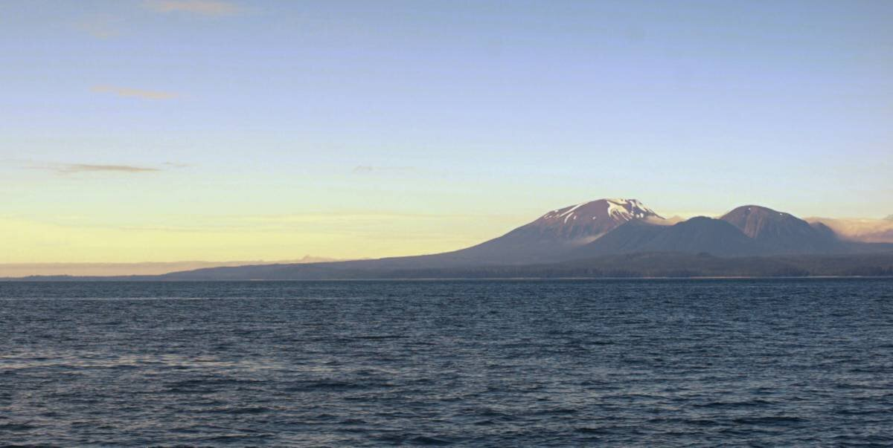
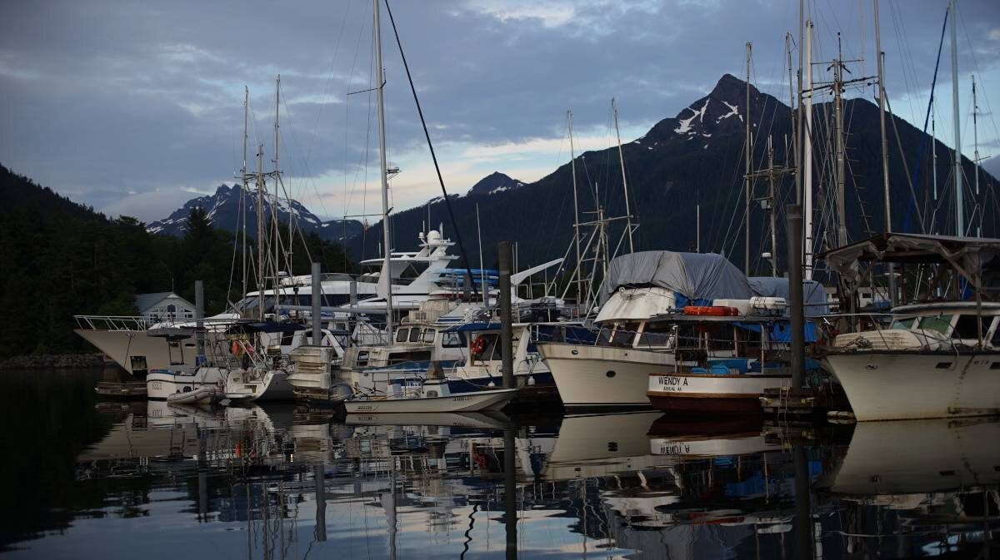
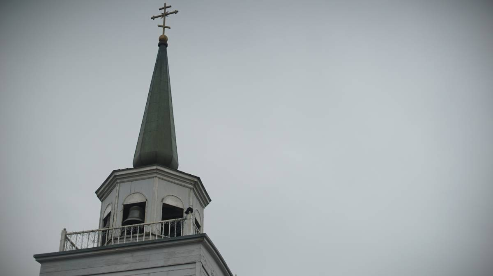
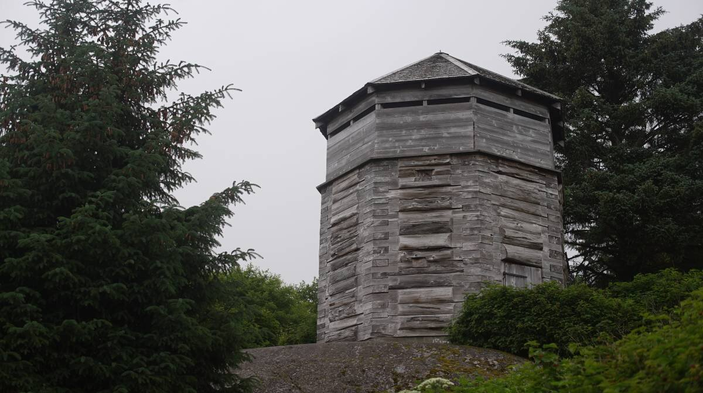
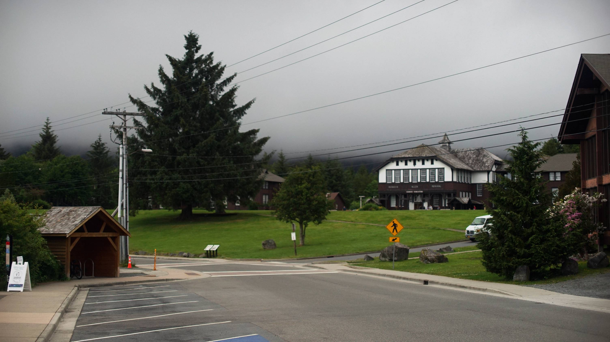
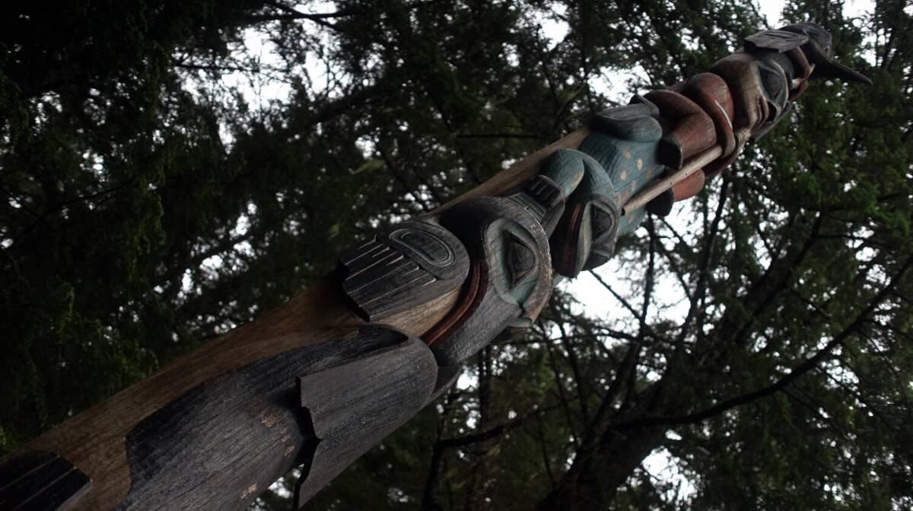

sitka
We arrived in Sitka on very clear day in late June, the snowy mountains were visible that day, completely unobscured. The sun was out, too, but only for today, the sky turned grey that very same night and stayed grey.
We were assigned a spot in Eliason Harbor, in someone's vacated slip, because like many marinas in Southeast Alaska the transient slips are always full of local boats. The slip is on the furthest finger in the marina, it takes a while to get to and from shore — especially if doing multiple trips, and multiple trips we did do. In one day, we must have walked the length of the marina back and forth 10 times.
We planned on staying for 3 days to re-supply, rest, and to wait for a favorable weather window to go south, but we ended up staying almost 6 days... we left on the 3rd day, as planned, but had an engine issue that forced us to return to the dock. Of course, the next day the wind came up and locked us on the spot yet again. Sitka is trying to keep us to itself.
Sitka is not a bad place to wait for weather, the grocery is close and has a lot of options(unlike the IGA in Petersburg), there are many trails to explore, and the waterfront is full of green spaces. In Ketchikan, walking was stressful because of all the cars, parking lots, etc, the level of traffic here isn't as bad. We had a nice walk by the highway to Napa one morning, walking next to the highway isn't usually a pleasant affair. Many trailheads start on this road. On this walk we passed by the Raptor Center, a place that takes care of injured eagles, owls etc. Eagles here are more common than gulls, we don't need to go to the center to get a good look at one. They're often perched on boat masts, or lamp posts.
We walked through part of downtown, but didn't stop anywhere, we don't usually eat out unless we're craving fries, and we don't buy gifts. The only things we spend money on are groceries, and engine or boat parts. The downtown area is only a tiny part of a city, and isn't the best part of it. We like to walk on back streets to see how people live, visit the grocery stores that they use, etc.
The St-Michael's Cathedral is downtown, it's hard to miss, its architecture is typical of the Russian Orthodox Church.
Sitka gets cruiseship traffic, but it doesn't appear as though this has corrupted the city. The city doesn't feel constricted, it's a joy to walk through, and the ships aren't docked everyday(we had a few days with none in port or at anchor). There was only one day when the level of cruiseship tourists was high.
We spotted signs around town from Small Town Soul, a group that seeks to limit the amount of cruiseships that can be in town at any one time, to limit how many can visit, for how long, etc, for the wellbeing of Sitka and its residents. We hope that they succeed, it would be sad if Sitka became like Ketchikan...
According to Butler’s model, a place is first “discovered,” then developed. Locals begin to lose control over decision-making, and laborers from elsewhere come to fill new jobs. The number of visitors climbs. At this stage, tourism becomes the dominant economic driver, and the environmental, social, and economic fabric of the original community changes, often to the detriment of locals’ quality of life.
Some Russian blockhouses are still standing, dating back to when Sitka was the capital of Alaska and was named New Archangel.
Out of all of the cities we've visited in Southeast Alaska, Sitka is our favorite. It was well worth the stop. From here, we hope to sail down the west coast of Baranof Island.
